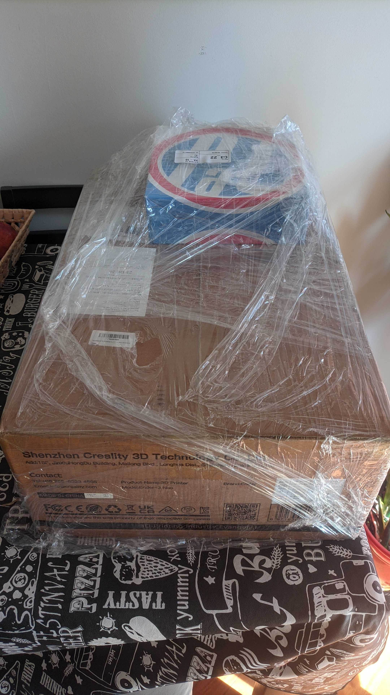

Ender 3 Neo
Este 2023 viene repuntando. Hoy llegó mi primera impresora 3d, una Ender 3 Neo, despúes de meses en duda de si comprarla o no.

Si hay algo bueno que saqué de mi trauma de esperar para comprar algo, es que la versión Neo es la Pro con todas las mejoras que se fueron dando, incluyendo cosas críticas como piezas que ahora son de metal y el auto nivelador ya de fábrica.